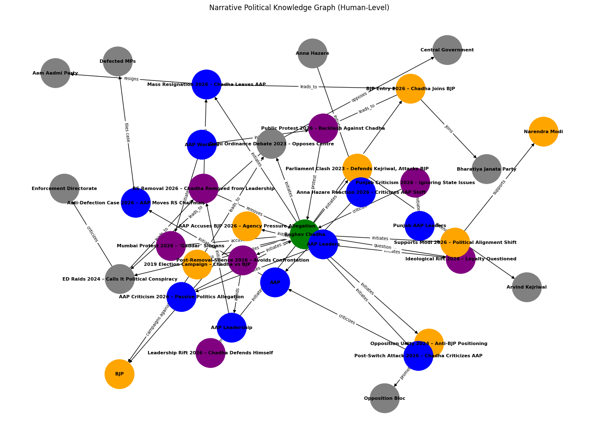

Narrative Political Knowledge Graph Analysis
This analysis transforms political news into a story-driven knowledge graph,
where events, relationships, and transitions reveal deeper strategic patterns rather than isolated facts.
What This Graph Represents
A knowledge graph connects entities (people, parties, institutions) with relationships and events.
Unlike traditional data, it enables contextual understanding and reasoning by linking events over time.
In this case, the graph reveals how Raghav Chadha’s political trajectory evolved from:
- Opposition leader (AAP)
- Internal conflict figure
- Strategic defector (BJP)
- Public controversy center
Timeline
Phase 1: Rise & Opposition (2019–2023)
→ Chadha campaigns aggressively against BJP
→ Opposes central government in Delhi Ordinance debate
→ Defends Kejriwal and attacks BJP in Parliament
Phase 2: Pressure & Crisis (2024)
→ Labels ED raids as political conspiracy
→ Strengthens anti-BJP positioning
Phase 3: Internal Breakdown (Early 2026)
→ Faces criticism from AAP leaders
→ Removed from Rajya Sabha leadership
→ Trust within party declines
Phase 4: Strategic Shift (April 2026)
→ Resigns from AAP
→ Joins BJP
→ Publicly supports Narendra Modi
Phase 5: Reaction & Fallout
→ AAP accuses BJP of political manipulation
→ Public protests against Chadha
→ Legal action (anti-defection)
Knowledge Graph Visualization

Figure: Event-driven narrative knowledge graph showing the transition of Raghav Chadha
from AAP to BJP along with causal relationships and political reactions.
🔍 Key Observations from Graph
1. Central Node Dominance
Raghav Chadha acts as a hub node, meaning all major events revolve around him — indicating high political centrality.
2. Clear Causal Chain
Conflict → Removal → Resignation → BJP Entry → Protest
This confirms a structured political transition, not a random decision.
3. Cluster Separation
The graph shows clear clustering:
- AAP Network (blue)
- BJP Network (orange)
- Events (purple)
This reflects
ideological polarization.
4. Event Density Spike in 2026
Most events occur in 2026 → indicating a critical turning point.
Strategic Insights
Insight 1: Political Switching is Gradual, Not Sudden
The graph shows early signals (criticism, distancing) before the final switch.
Insight 2: Institutional Pressure Plays a Role
ED investigations + internal party conflict act as triggering forces.
Insight 3: Leadership Trust is the Breaking Point
Removal from leadership = tipping point → resignation.
Insight 4: Public Perception Becomes Risk Factor
Post-switch protests show reputational impact.
Insight 5: Knowledge Graph Enables Decision Intelligence
Knowledge graphs connect events into a story, enabling better strategic decisions rather than isolated analysis.
Final Conclusion
This knowledge graph demonstrates that:
- Political transitions are event-driven and sequential
- Internal conflict is a stronger trigger than external opposition
- Leadership dynamics define long-term political alignment
- Public reaction becomes critical after strategic decisions
Final Insight:
This is not just a party switch — it is a structured political transition shaped by pressure, conflict, and strategic realignment.